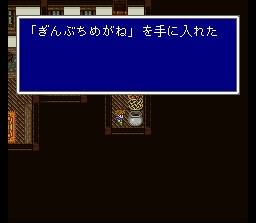

월스마을
물이 넘치는 한가로운 분위기의 월스마을. 개굴개굴..
좌측의
집에 은테안경이 있으니 챙깁시다. 화력선 싸움 등에 유용하게 쓰입니다.

방어구상에서 한층 업그레이드된 방어구들을 팝니다. 마법상에서 파는 마법들은 아직 쓸 수 있는 직업이 없습니다. (월스탑을 아직 깨지 않았다면)
도구상: 포션, 해독제, 안약, 여인의 키스, 요술방망이, 금바늘, 피닉스의 꼬리깃,
텐트
무기상: 배틀액스, 롱스워드, 대거
방어구상: 아이언실드, 아이언헬름,
아이언아머, 검을 막는 옷, 목면의 로브
마법상: 소환마법Lv1, 슬로우, 리제네,
뮤트, 헤이스트